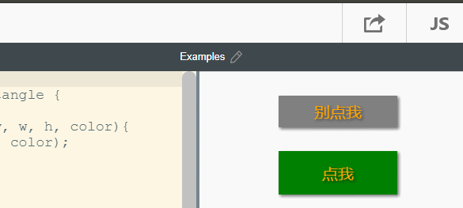

按钮¶
按钮是比较常见的控件，包含2个部分，框体和文字，我们可以用长方形来作为框体，添加上文字，即可实现按钮类。
按钮类 Button¶
// 实现一个按钮类
class Button extends Rectangle {
constructor(src, x, y, w, h, color){
super(x, y, w, h, color);
this.src = src;
}
draw () {
ctx.save();
// 位置居中
ctx.textAlign = "center";
ctx.textBaseline = "middle";
super.draw();
text(this.src, this.x+this.w/2, this.y+this.h/2);
ctx.restore();
}
}
测试 test¶
完成Button类后，我们来使用一些实例对Button类进行测试
var btn1 = new Button("别点我", 100, 100, 150, 40, 'grey');
var btn2 = new Button("点我", 100, 300, 150, 55, 'green');
btn1.draw();
btn2.draw();
btn1.click = function(){
alert("别点我");
};
btn2.click = function(){
alert("点我");
};
点击btn1和btn2，分别弹出不同的提示。
